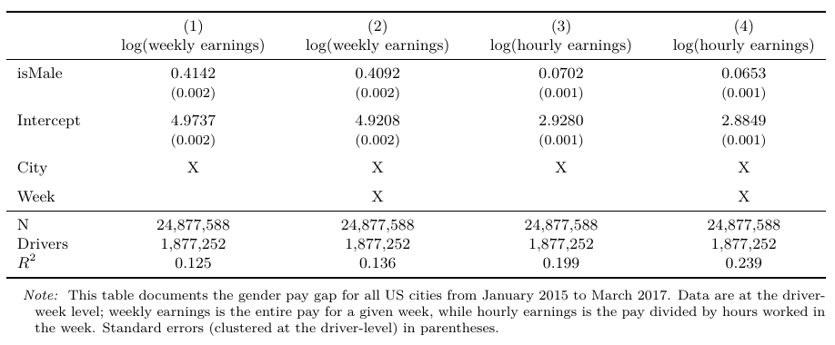
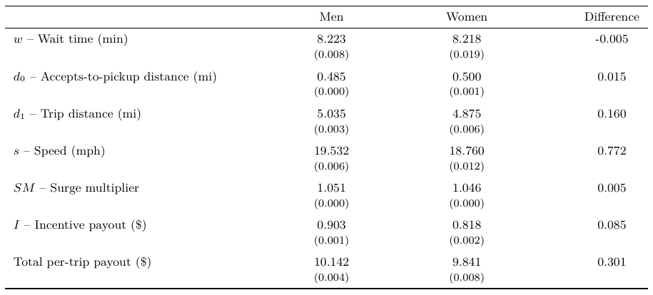
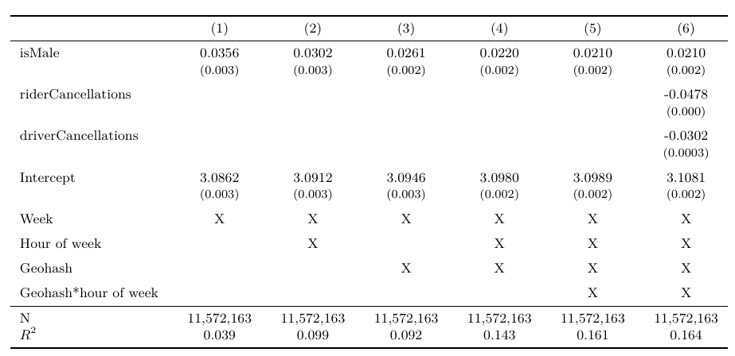
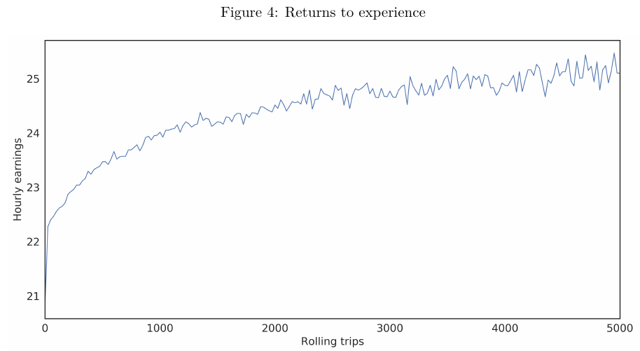
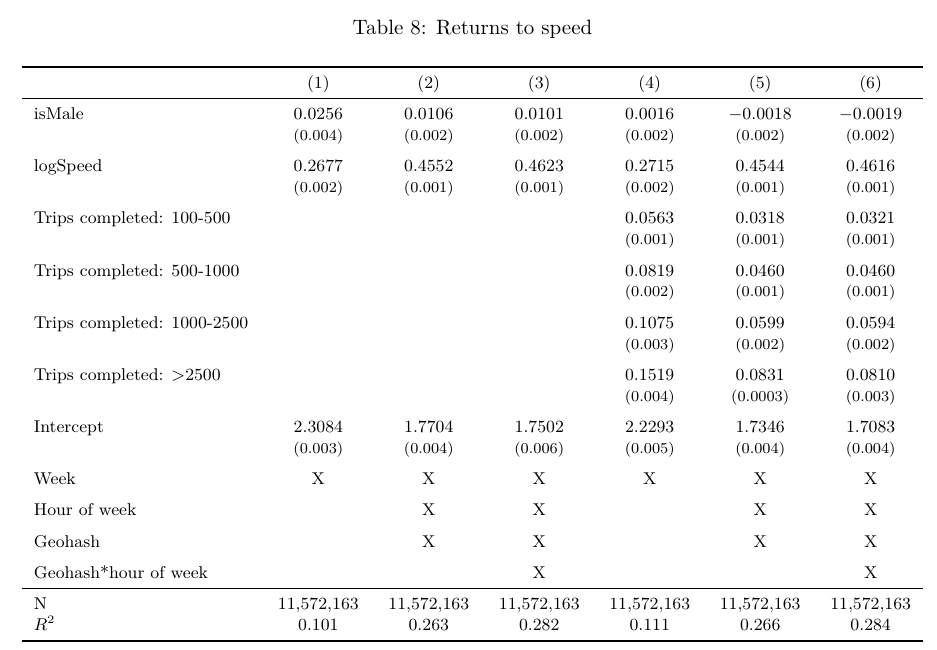

The Uber Wage Gap
ECON 383: Economics of Discrimination
Winter 2018
Identification
Previously:
- Descriptive statistics vs causal estimates
- Quasiexperiments allow for robust estimates of causal effects
- Causal estimates require "identification assumptions"
Estimating causal effects
- Suppose we think that variable \(x\) causes variable \(y\)
- How do we estimate the causal effect?
- How do we interpret the causal estimate?
- We use econometrics – a set of statistical tools applied to economic problems
- Standard tool: Ordinary least squares (OLS)
- AKA: Linear regression
OLS
- Suppose the true (but unknown!) relationship between \(x\) and \(y\) is determined by:
\[y_i = \beta_0 + \beta_1 x_i + u_i\]
- \(i\) is an index (person, state, country, etc)
- \(\beta_0, ~\beta_1\) are parameters
- \(e_i\) is the error
- Random variation that occurs in nature
- This error is zero on average
OLS
\[y_i = \beta_0 + \beta_1 x_i + u_i\]
- Suppose \(x_i\) increases by one unit. What happens to \(y_i\)?
- \(y_i\) increases by \(\beta_1\)
- \(\beta_1\) is the marginal effect of a change in \(x\) on \(y\)
Mean difference
- Suppose \(x\) can take one of two values (ex: male/female)
- We call \(x\) a dummy variable
- \(x_i = 1\) if individual \(i\) is a female
- \(x_i = 0\) if individual \(i\) is a male
- \(y_i\) is the outcome variable (ex: wages)
- Average wage for women: \(\beta_0 + \beta_1\)
- Average wage for men: \(\beta_0\)
- Difference between average woman and average man: \(\beta_1\) (wage gap)
- \(\beta_1\) is the marginal difference between men and women
Multiple regression
- Now suppose the true relationship is
\[y_i = \beta_0 + \beta_1 x_i + \beta_2 z_i + e_i\]
- \(y\) is determined by \(x\) and \(z\)
- Now \(\beta_1\) is the marginal effect of a change in \(x\) holding \(z\) constant
- All else equal, how will a change in \(x\) affect \(y\)?
- \(z_i\) is a control variable
Statistical inference
- We never observe the "true model" (i.e. the "data generating process")
- We must estimate the model parameters
- Randomness ensures that are estimates are never perfectly accurate
- We can use statistics to assign a degree of confidence to our estimates
P-values
- Given we have properly specified the model (identification assumptions), a p-value tells us how confident we are in an estimate
- P-value is the probability that we would see an estimate at least as large as the one we observe if the true marginal effect is zero
- How likely is it that randomness is driving our results?
- Example: Estimate \(\hat{\beta}_1 = 0.07\) with a p-value of \(p=0.04\)
- If the true \(\beta_1 = 0\), there's a 4% we would estimate \(\hat{\beta_1} > 0.07\) due to randomness
Statistical significance
- Research must choose a p-value that is "acceptable"
- This is known as a "level of significance"
- In economics, this is generally \(p<0.05\)
- In particle physics, this \(p<0.0000003\) ("5 sigma")
Tables in economics papers
- Parameter estimates are usually reported in tables
- Ex:
\[0.4142\] \[(0.002)\]
- The top number is \(\hat{\beta}_1\)
- The bottom number is the standard error
- If top/bottom > 1.96, then \(p<0.05\)
- Usually (not always) use stars (\(***\)) to signify level of significance
Uber
- "Car-sharing" service
- Drivers matched with riders based on an algorithm
- Algorithm and riders do not observe gender of driver
- Driver pay also a function of the algorithm
- Impossible for prejudice to exist in the Uber market!
Wage gap
- Estimate the difference in earnings between men and women by estimating the equation:
\[\ln(Earnings_d) = \beta_0 + \beta_1 isMale_d + e_d\]
- \(isMale_d\) is a dummy variable equal to one if driver \(d\) is male
- Using log earnings means the parameter estimate is (approximately) a percentage difference in pay

Explaining the gap
- Not the Goldin "nonlinearity" story!
- What are female drivers doing differently that causes them to get lower wages?


Residual gap
- Location and timing accounts for a small amount of the gap
- Remaining pay gap is 2.1% after controlling for all of this!
Driver tenure
- Men are more likely to work for Uber for a longer period of time than women
- Men also drive more frequently than women
- Experience may increase wages


Do men learn "faster" than women?
- Drivers are able to get higher wages by choosing types of rides to accept
- Drivers can strategically cancel certain rides to get higher wages
- Controlling for these effects does not change residual gap
- Men aren't learning faster than women
